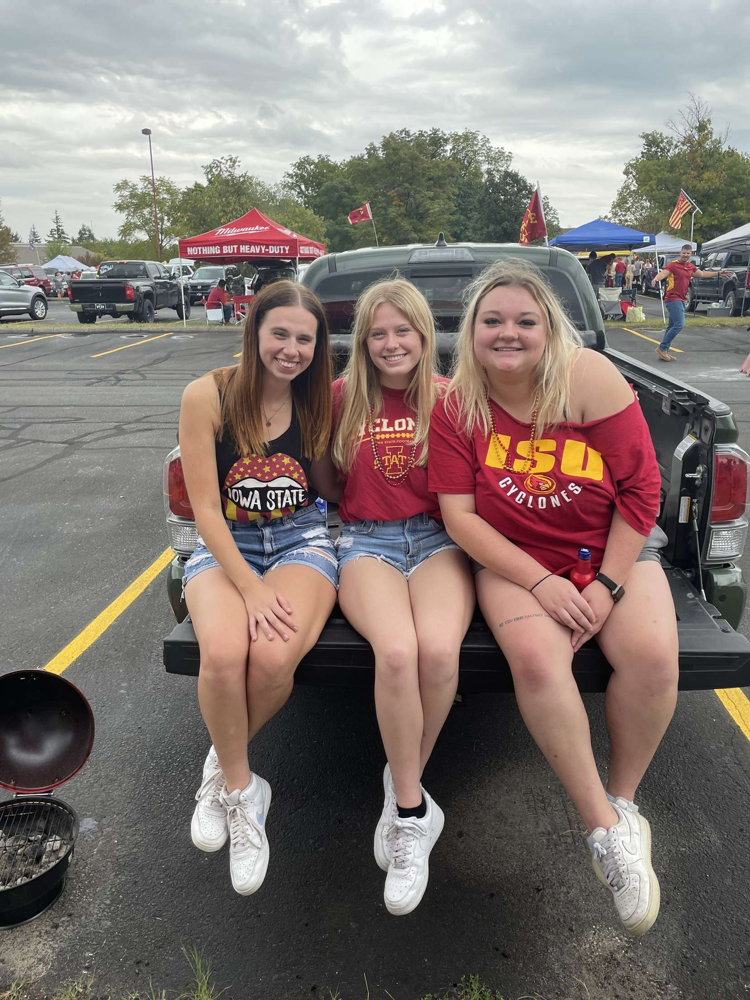
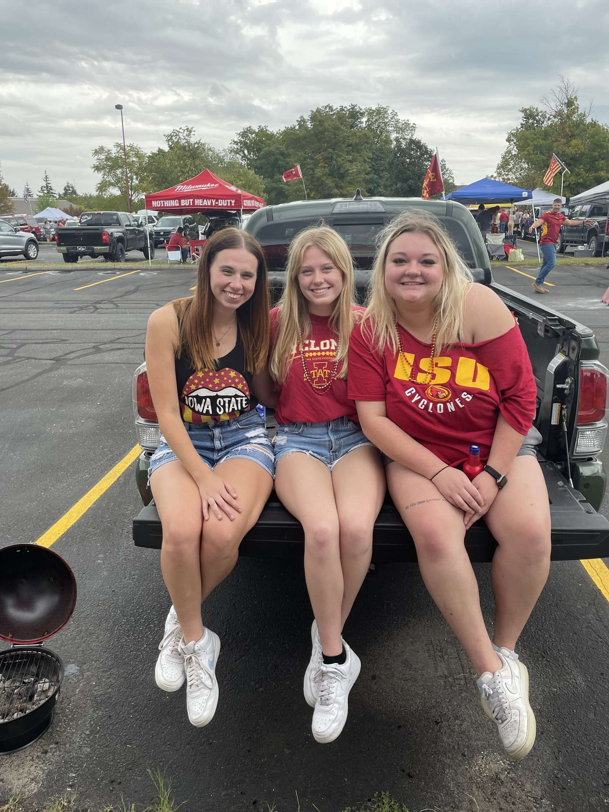

My Favorite ISU Memories‚ù§Ô∏èüíõ
üè´ Joined a sorority and met lots of new people.


I was in the Alpha Gamma Delta sorority for three years. It pushed me to be way more social and outgoing. My favorite events were Greek Week each year and going through recruitment before the school year started. While I may no longer be apart of this sorority, there is no doubt I made longlasting friends.
üèà Attended lots of Cyclone football games.
 

Each year, I made sure to go to as many ISU football games as I could. I loved going to the tailgates with my friends! I even went to Kansas City with my family to watch the Cyclones play at the Chiefs stadium. My love for Rocco Becht was as strong as ever! #loyalforevertrue!
üìö Made friends in classes/advanced my career in PR.


As I got older, I became more involved outside of greek life. I joined the student organization, Winterfest, where I met one of my close friends, Abby, and met so many awesome people in my PR 424 class. It was truly an educational, resume building time that I would not trade for the world!
ü•Ç Nights out on Welch Ave during my senior year.


Once I turned 21, I was so excited to go to all the Ames bars. Most of the time, I would go out with my friend Mya, where we would have a blast at Thursday mug nights. My favorite moments were going out to Wednesday night "dollars" during the fall semester on a weekly basis and watching the Cyclones win in the Cyhawk game in BNC.